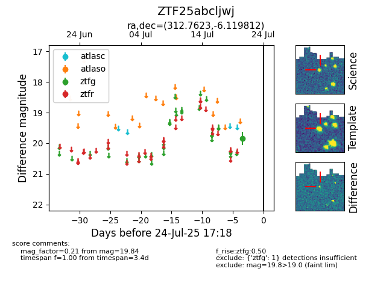

Target ZTF25abcljwj at 2025-08-05 23:02, see:
FINK: fink-portal.org/ZTF25abcljwj
Lasair: lasair-ztf.lsst.ac.uk/objects/ZTF25abcljwj
ALeRCE: alerce.online/object/ZTF25abcljwj
alt names
ZTF25abcljwj (ztf,fink)
coordinates:
equatorial (ra, dec) = (312.7623,-6.11981)
galactic (l, b) = (41.5833,-29.32538)
photometry
last ztfg=19.84
1 ztfg detections
